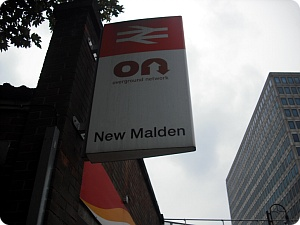
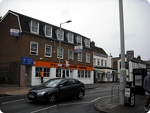
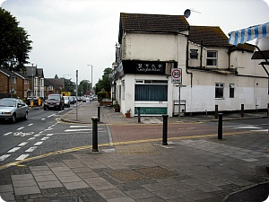

토요일
양파님 주최 짜장면번개 댕겨왔습니다//
전에 동생곰왔을때 런던서 먹은 한국음식점 이후로
두번째 한국레스토랑
중국집!! 예이~~>_<
맛난거 많이먹고 수다도 신나게 떨고
한인마트서 장도보구(......라면이랑라면이랑라면이랑과지이지만;;OTL)
오랜만에 여기저기 한국음식점 있구 한국슈퍼도 있는 동네를 댕겨오니
느므 행복했어요 ㅜㅜ
(제가 사는 maidstone은 정말 암울합니다;; 암것도없어요;;
뭐든 한국음식 구할려면 무조건 런던!!! 이라능;;)
+ 저녁 늦게 집에돌아와 컴을켜니까
페이스북에서 자주 채팅하는 같은과 칭구놈이 말을 걸었음
처음봤을때
"고놈 참 잘생겼네 키도 크고 몸매도 훌륭하구나~
어헛 눈이 호강한다~(←;;;;)"
라면서 혼자 좋아라~했는데
이분도 일빠라서(...;;) 하마자키 아유미가 좋고
일본어도 몇몇단어 아는
그래서 가끔 내가 일본어를 알려주면서 친해진 그런아가인데
(아니 울과에 japanese가 두명이나 있는데 왜 나한테 일본어를;;;)
오늘 채팅중 술마시믄서 나에게
".............일년전에 헤어진 '남자'친구가 아직도 생각나. 잊고싶은데 계속 생각나"
란다
잘생기고 잘빠지믄 게이라더니........
영국에 그리 게이가 많다고 하더니.........
하긴 니 페이스북에 맨날
"오늘 어떤 못생기고 뚱뚱한 남자가 나랑 똑같은 가방맨거 봤어
당장 버리고 새거살거야! 흥!!"
요딴거 올릴때부터 살짝 짐작은했지만
게이..................OTL
이 개늠이 누군 연애도 못한다고 주위에서 온갖 구박을 다 먹고있는데
나한테 지 '남자'친구 상담을 해!!!!!!!!!!!!!!!!!
여......여튼 영국와서 생긴 저의 첫 게이칭구였습니다
이상 끗;;;
............훌쩍;;